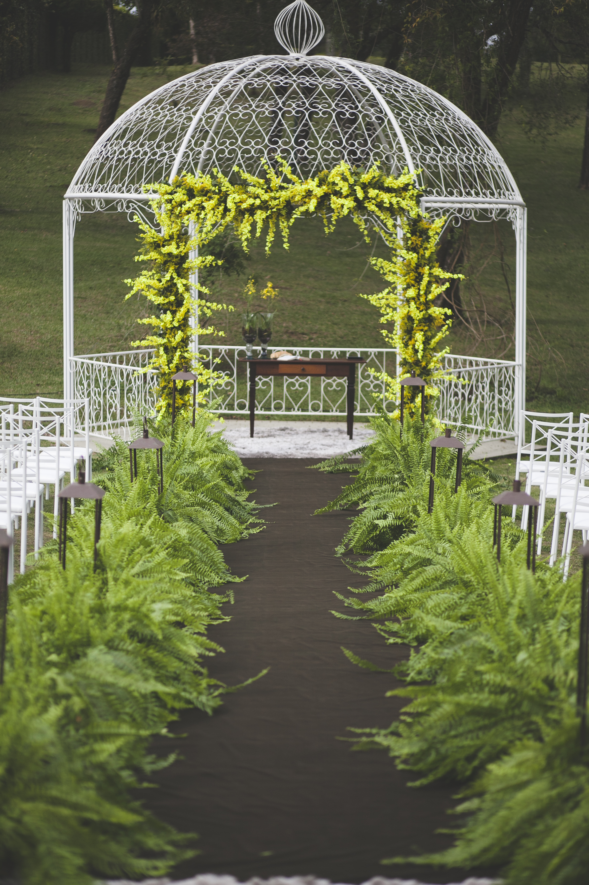
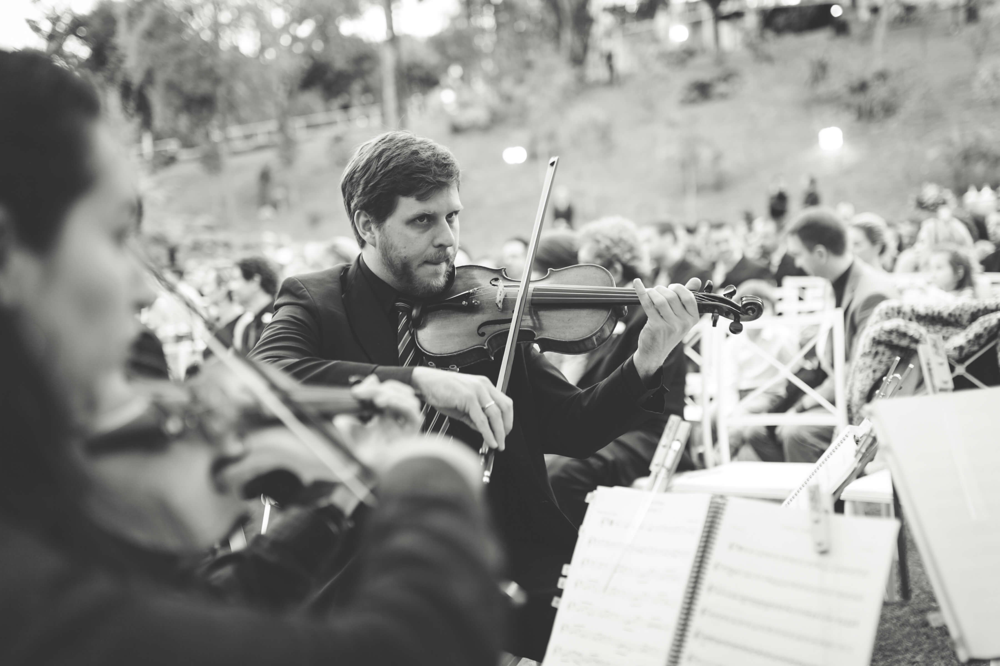
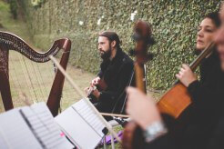
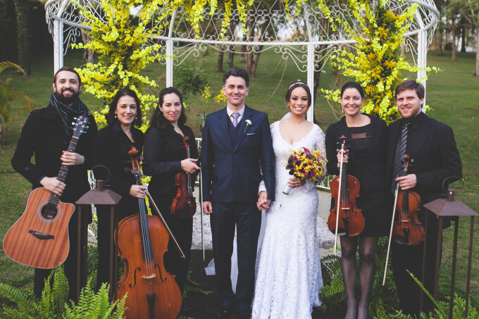

Casamento ao ar livre - Carolina e Marcio
1 de setembro de 2017
O casamento ao ar livre é inspirador e romântico!
A cerimônia de união do músico Marcio Silva e da musicoterapeuta e psicóloga Carolina Batista foi um casamento ao ar livre, e aconteceu no dia 06 de setembro de 2015, no lindo Espaço Klaine em Curitiba, e teve repertório pensado e escolhido com tanto carinho que emocionou a todos, inclusive os músicos!!!

Casamento ao ar livre - QuartilisA formação musical escolhida foi o Quinteto Quartilis composto por 2 violinos, viola erudita, violoncelo e harpa céltica/violão. O prelúdio musical, para recepcionar os convidados antes do início da cerimônia de casamento, aconteceu somente com quarteto de cordas e música popular brasileira.


As cerimônias ao ar livre são mais descontraídas e permitem maior liberdade na escolha das músicas que irão compor a trilha sonora.
O ponto alto da cerimônia foi a entrada da noiva, que desceu a escadaria ao som da música “É isso aí” na versão da Ana Carolina e Seu Jorge (arranjo instrumental feito especialmente pelo Quartilis para este momento) e quando pisou no tapete a trilha mudou para a Marcha Nupcial de Mendelssohn!
(Clique nas músicas para ver os videos desta cerimônia no canal do Quartilis no Youtube)
- Entrada dos Pais: Let it be – Beatles
- Entrada de Padrinhos: All I ask of You – Fantasma da Ópera
- Entrada do Noivo: Libertango – A. Piazzola
- Entrada da Noiva: É isso aí – Ana Carolina e Marcha Nupcial- Mendelssohn
- Entrada das Alianças: A bela e a fera- Disney (A. Menken)
- Votos: A Thousand Yeas – C. Perri
- Alianças: Have you ever really loved a woman
- Comunhão: Ave Maria – Gounod
- Benção: Oração da Familia – Pe. Zezinho
- Assinatura/Cumprimentos: Velha Infancia – Tribalistas
- Saída Padrinhos: Everything – Michael Buble
- Saída dos Noivos: I say a litlle pray for you
(créditos das fotos: Yellow Estudio)
Fornecedores:
Local cerimônia e recepção: Espaço Klaine
Assessoria e Cerimonial: Karla Rossi
Vestido da Noiva: Ronaldo Nitta
Maquiagem: Ju Friedrich
Tiara: The Adress Love
Traje do Noivo: Kiko Mocellin
Foto: Yellow Estudio
Video: Leo Sampaio
Celebrante: Osmar Fritz
Decoração: ZAF Eventos
Buffet: Klaine Gastronomie
Doces e Bolo: Edna Torquato
Bolo Fantasia: Judi Bolos
Bartender: The Bell Eventos
Iluminação: TSG
Lembrancinhas: Beneditos e Totem Click
Papelaria: CDAM convites
Músicos cerimônia: Quartilis
Músicos recepção: Banda Madeira
Pista de Dança: Pista de Dança.com
Carro: Top Class Cars

Casamento ao ar livre Quartilis
Para dicas sobre a contratação dos músicos, confira nosso post clicando aqui.